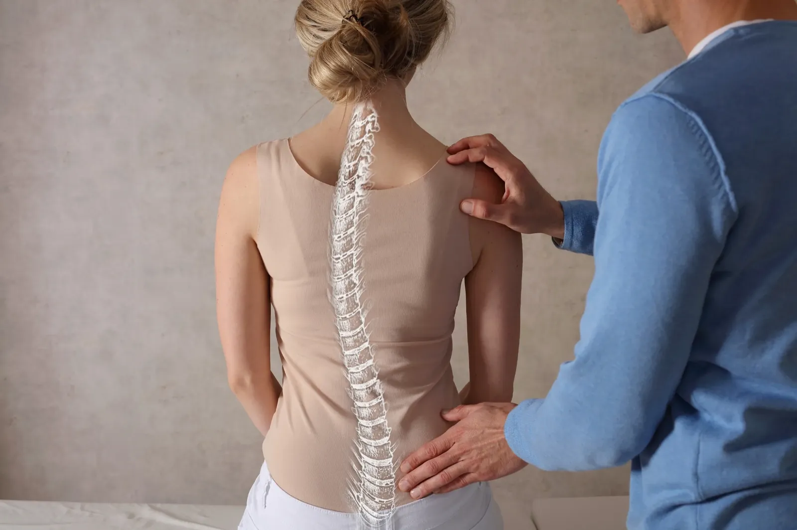

Scoliosis is a sideways curve of the spine, and honesty matters here: chiropractic care does not straighten the curve. What it can do is help a spine that has a curve move better and feel more comfortable, easing the stiffness and muscle strain the curve creates, while your medical team monitors and manages the curve itself.

Scoliosis attracts big promises, and most of them are not honest. So here is the plain version: what scoliosis is, what actually manages the curve, and the real and useful role hands-on care can play in comfort and movement without pretending to be a cure.
What is scoliosis?
Scoliosis is a sideways curvature of the spine, often with a rotation to it. Most cases appear during the growth years and have no single identifiable cause, which is the type doctors call idiopathic. It ranges from mild curves that need only monitoring to larger ones that need active medical management. The size of the curve, measured on an X-ray, is what guides how it is handled.
What the curve tends to create day to day:
- Muscles working unevenly across the two sides of the spine.
- Stiffness and reduced movement through the curved segments.
- Aching from the postural load the curve puts on the back.
- Uneven wear over time in the joints along the curve.
- Self-consciousness about posture, especially through the teenage years.
What manages the curve itself is monitoring, and for growing children a brace when the curve warrants it, and surgery for the largest curves. That belongs with the medical specialists who track it, and we work alongside them rather than in place of them.
How does chiropractic care help with scoliosis?
With the comfort and the movement, not the curve. Gentle, specific adjustments and soft-tissue work can restore movement to the stiff segments along the curve and ease the uneven muscle strain it creates, which for many people means less aching and easier movement day to day.
In practice, supportive care usually blends a few things:
- Gentle adjustments to restore movement to the stiff segments, matched carefully to the spine.
- Soft-tissue work to ease the muscle strain the curve creates on each side.
- Movement and strengthening to support the spine and help posture feel steadier.
- Coordination with the doctor or specialist monitoring the curve, not around them.
The goal is honest and modest: a spine with a curve that moves better and hurts less.
What does care cost, and do you take insurance?
No referral is needed to book, and we will go over the costs with you up front so there are no surprises. Costs depend on your plan and what your back needs, and we will always walk you through it in plain numbers first.
- No referral needed to book a first visit.
- We go over the costs with you before anything begins, so you know what to expect.
- Supportive care for comfort and movement, coordinated with the team monitoring the curve.
We cannot promise a specific outcome or what your insurance will cover, and we will not promise to reduce a curve, because that is not what this care does. What we can promise is an honest look, a straight answer, and care that works with your medical team rather than against their advice.
For a growing child or teen, the U.S. National Institute of Arthritis and Musculoskeletal and Skin Diseases states plainly that braces work well when the child is still growing and the brace is worn as directed. That is the evidence-backed way to manage a growing curve, and it sits with the medical team; our role is the comfort and movement around it.
Source: U.S. National Institute of Arthritis and Musculoskeletal and Skin Diseases (NIAMS), Scoliosis in Children and Teens. niams.nih.gov